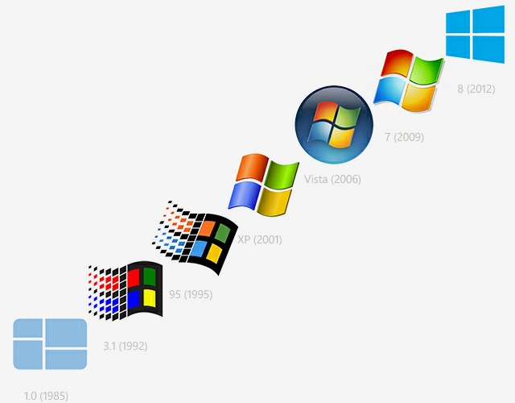

Что такое Windows?
Windows — это операционная система, сделанная корпорацией Microsoft (Майкрософт). Операционная система (ОС) — это главная программа, которая запускается при включении компьютера. Она позволяет пользователям компьютера работать с файлами, пользоваться Интернетом и запускать в окошках другие программы, игры, фильмы, музыку. Windows переводится как "окна". Операционная система Windows платная.
ОС windows делятся на две группы: Серверные и обычные. Серверные предназначенны для подключения множества компьютеров, допустим в офиссе. Обычные расчитанны на одного пользователя.
История и разновидности Windows:
1) Windows 1.0 / год 1985
2) Windows 2.0 / год 1987
3) Windows 3.0 / год 1990
4) Windows NT 3.1 / год 1993
5) Windows NT 3.5 Workstation / год 1994
6) Windows NT 3.51 / год 1995
7) Windows 95 / год 1995
8) Windows NT 4.0 / год 1996
9) Windows 98 / год 1998
10) Windows Millenium / год 2000
11) Windows 2000 / год 2000
12) Windows XP / год 2001
13) Windows Vista / год 2006
14) Windows 7 / год 2009
15) Windows 8 / год 2012
16) Windows 8.1 / год 2013
17) Windows 10 / год 2015
18) Windows 11 / год 2021
Также существует серверные версии windows:
1) Windows 1.0 / год 1985
2) Windows 2.0 / год 1987
3) Windows 3.0 / год 1990
4) Windows NT 3.1 / год 1993
5) Windows NT 3.5 Workstation / год 1994
6) Windows NT 3.51 / год 1995
7) Windows 95 / год 1995
8) Windows NT 4.0 / год 1996
9) Windows 98 / год 1998
10) Windows Millenium / год 2000
11) Windows 2000 / год 2000
12) Windows XP / год 2001
13) Windows Vista / год 2006
14) Windows 7 / год 2009
15) Windows 8 / год 2012
16) Windows 8.1 / год 2013
17) Windows 10 / год 2015
18) Windows 11 / год 2021